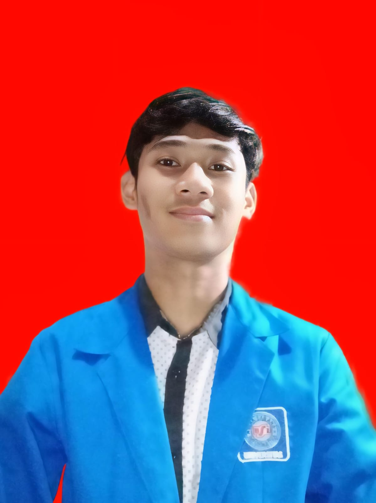

✦
UI/UX & Design
Menyusun user flow, wireframe, dan prototipe antarmuka yang berorientasi pada pengguna.
Hello, I'm
Mahasiswa Sistem Informasi yang tertarik pada UI/UX Design, pengembangan aplikasi, SEO, dan teknologi digital. Senang belajar, membangun solusi, dan mengembangkan ide menjadi proyek nyata.

Information Systems Student
01 / About me
Saya mahasiswa semester 5 Program Studi Sistem Informasi di Universitas Bina Sarana Informatika PSDKU Solo. Saya memiliki minat pada desain antarmuka, pengembangan aplikasi, serta optimasi mesin pencari. Saat ini saya menjalani magang di Berkah Solo Web untuk memperluas pengalaman dan mengembangkan keterampilan di dunia kerja.
Menyusun user flow, wireframe, dan prototipe antarmuka yang berorientasi pada pengguna.
Mempelajari pengembangan aplikasi dengan Flutter, Dart, Supabase, dan basis data.
Riset topik, penulisan artikel, dan optimasi konten agar lebih mudah ditemukan audiens.
02 / Work Experience
Pengalaman profesional, magang, dan aktivitas kerja yang membangun keterampilan saya.
Menjalani program magang pada bagian SEO, meliputi riset topik, penyusunan artikel, optimasi konten website, serta mendukung aktivitas pengelolaan konten digital.
Menulis artikel berita, melakukan riset topik, mengoptimalkan SEO on-page, dan mengelola konten informatif sesuai kebutuhan website.
Melayani pelanggan, menangani transaksi, serta melakukan pencatatan transaksi dan laporan keuangan sederhana.
Memberikan pelayanan kepada pelanggan, bekerja sama dalam tim, serta menjaga kebersihan dan kenyamanan area kerja.
Membantu pekerjaan operasional dan pengemasan produk kosmetik sesuai standar perusahaan.
Mempelajari proses pelayanan kesehatan, manajemen obat, dan administrasi di lingkungan apotek serta puskesmas.
03 / Education
Perjalanan akademik dan pendidikan yang telah saya tempuh.
Program Studi Sistem Informasi, PSDKU Solo. IPK semester 1–4: 3,96.
Jurusan Farmasi.
Pendidikan menengah pertama.
Pendidikan sekolah dasar.
Pendidikan taman kanak-kanak.
04 / Certifications & Achievements
Daftar sertifikat keikutsertaan, pelatihan, dan uji kompetensi terverifikasi yang pernah saya ikuti.
Dokumentasi sertifikat, penghargaan akademik, pelatihan, dan arsip karya lengkap saya tersimpan di Google Drive.
05 / Selected work
Beberapa proyek yang pernah dikerjakan. Detail dan tautan demo dapat ditambahkan setelah dipublikasikan.
Aplikasi absensi berbasis verifikasi wajah dan geofencing untuk membantu pencatatan kehadiran.
Konsep sistem penggajian dengan alur pengolahan data dan pembuatan dokumen PDF.
Perancangan user flow, struktur halaman, dan prototipe desain antarmuka website.
Konsep smart waste management dengan fokus pada pengalaman pengguna dan rancangan sistem.
Pengalaman riset kata kunci, penyusunan artikel, dan optimasi konten untuk website.
Lihat informasi portofolio lebih lanjut melalui tautan yang digunakan pada CV saya.
Buka portofolio ↗06 / Toolkit
Teknologi dan keterampilan yang saya gunakan serta terus kembangkan.
07 / Beyond the classroom
Bendahara Himpunan Mahasiswa Sistem Informasi · 2024–sekarang.
Anggota Karang Taruna pada 2023–2024.
Anggota Pimpinan Cabang Ikatan Pelajar Muhammadiyah Bidang PIP pada 2023–2024.
Anggota Pimpinan Ranting Ikatan Pelajar Muhammadiyah Bidang PIP · 2022–2023.
08 / Let's connect
Saya terbuka untuk diskusi kolaborasi proyek, peluang magang, freelance UI/UX Design, pengembangan aplikasi, hingga optimasi SEO.